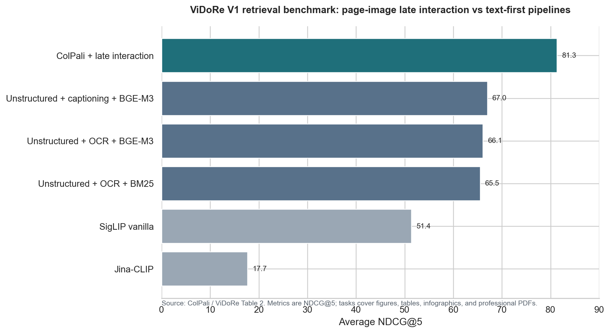
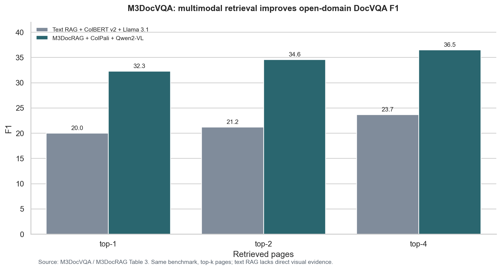
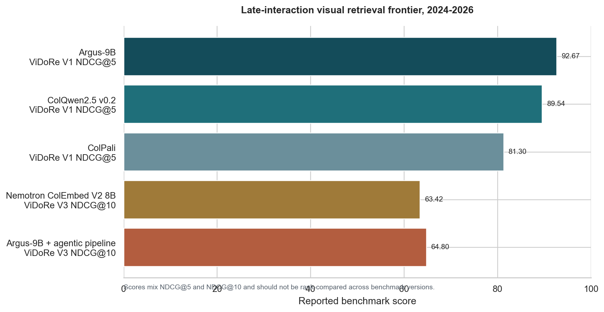

ColPali ViDoRe V1 NDCG@5
ColPali page-image retrieval beat Unstructured + VLM captioning + BGE-M3 at 67.0 average NDCG@5 on ViDoRe V1. Source
Research survey for Grid AgentCore
A source-backed comparison of current production patterns and cutting-edge visual retrieval methods, with a recommendation for adding visual page retrieval to the existing Grid document stack.
The current Grid design is defensible and close to the production-standard approach for visually rich PDFs: parse complex documents into structured text, enrich figures with VLM descriptions, retrieve text with vector/reranker plus structural tools, then attach the original figure crop through provenance. The strongest recommendation is to add visual_page_retrieval as a fourth retrieval tool, not to replace vector retrieval, PageIndex, or GraphRAG.
ColPali page-image retrieval beat Unstructured + VLM captioning + BGE-M3 at 67.0 average NDCG@5 on ViDoRe V1. Source
ColPali + Qwen2-VL reached 36.5 F1, compared with 23.7 F1 for a text RAG baseline on the same open-domain DocVQA benchmark. Source
Argus-Retriever is a June 2026 preprint and reports the highest open late-interaction combined-leaderboard result seen in this survey. Source
Recommendation: add a page-image retriever that renders each PDF page, embeds page images with a late-interaction visual document model such as ColPali, ColQwen, Nemotron ColEmbed, or Argus-style retrievers, and returns page IDs plus image URIs. The agent should call it for questions about figures, charts, diagrams, layout, screenshots, or when text retrieval has low confidence or conflicting evidence.
MatureText-firstObservable citations
Most deployed systems still convert documents into text or Markdown, preserve layout/table metadata where possible, chunk semantically, run vector or hybrid retrieval, rerank candidates, and attach original images or page references at answer time. LlamaParse positions complex-document parsing as a first-class step and explicitly supports tables, images, charts, and diagrams. NVIDIA's RAG Blueprint documents image extraction, VLM captioning at ingestion, and cited images flowing into VLM answer generation.
Best fit: exact text, definitions, procedures, identifiers, large corpora, and lower-cost retrieval.
Fast-movingStorage-heavyPage-as-image
The research frontier retrieves rendered page images directly. ColPali introduced VLM page embeddings with late interaction. M3DocRAG, VisRAG, and VDocRAG show that visual retrieval can outperform text RAG on questions whose evidence is in charts, tables, figures, or layout. ViDoRe V3, Argus-Retriever, and Nemotron ColEmbed V2 show the 2026 trend: late interaction, visual reranking, and agentic retrieval pipelines.
Best fit: charts, diagrams, scanned pages, visual tables, spatial layout, and failures caused by parsing loss.
The table compares methods by the benchmark and metric each paper reports. Treat the numbers as directional evidence, not a single leaderboard, because the datasets, metrics, and candidate pools differ.



| Method / benchmark | Reported metric | Best reported number | Comparison point | Usefulness for Grid | Source quality |
|---|---|---|---|---|---|
| LlamaParse Agentic on ParseBench | Overall parser score plus tables, charts, faithfulness, semantic formatting, visual grounding | 84.88 overall; charts 78.11; visual grounding 80.62; 1.25 cents/page | Ranked first in ParseBench top-10 at research time | Justifies using Agentic parsing for complex PDFs before retrieval | Vendor-adjacent benchmark; deterministic rule-based evaluation |
| ColPali on ViDoRe V1 | Average NDCG@5 across page-level retrieval tasks | 81.3 | Unstructured + captioning + BGE-M3: 67.0 | Strong evidence for adding page-image retrieval | ICLR 2025 paper and public benchmark |
| M3DocRAG on M3DocVQA | Open-domain DocVQA F1 / EM, top-k retrieved pages | 36.5 F1 / 31.4 EM at top-4 | Text RAG baseline: 23.7 F1 / 17.8 EM at top-4 | Shows visual page retrieval improves answer quality, not only retrieval | ICCV 2025 workshop paper |
| M3DocRAG on MP-DocVQA | ANLS / page accuracy | 0.8444 ANLS / 81.05 page accuracy | Text RAG baseline: 0.5603 ANLS / 75.33 page accuracy | Useful proxy for multi-page PDFs with visual evidence | ICCV 2025 workshop paper |
| M3DocRAG indexing tradeoff | Retrieval latency on about 40K pages | IVFFlat: 1.8s/query; IVFPQ: 0.2s/query | FlatIP exact retrieval: 21.0s/query | Important for productionizing page-image indexes | ICCV 2025 workshop paper |
| MMDocRAG benchmark | Quote-selection F1 and judged answer quality | GPT-4.1: 70.2 F1 and 4.14 answer quality | Benchmark spans 4,055 QA pairs, 222 long documents, 48,618 text quotes, and 32,071 image quotes | Supports hybrid text/image evidence and interleaved visual citations | Project page and arXiv-linked benchmark |
| VisRAG | End-to-end multimodal document RAG accuracy | 20-40% reported end-to-end gain over text RAG | GPT-4o visual top-3 generation: 52.22 average vs GPT-4o OCR top-3: 41.65 in the paper tables | Evidence that preserving original page images reduces parsing loss | arXiv preprint, revised 2025 |
| VDocRAG / OpenDocVQA | Retrieval NDCG@5 and QA accuracy across visually rich documents | ChartQA QA: 52.0 / 48.0; SlideVQA QA: 44.2 / 42.0 | Text-based RAG: ChartQA 28.0 / 28.0; SlideVQA 28.6 / 28.0 | Shows benefit of representing PDFs/PPTX as images for charts, tables, figures, diagrams | CVPR 2025 paper and project page |
| PageIndex | Vendor-reported FinanceBench accuracy | 98.7% | Not directly comparable to visual retrieval benchmarks | Useful as a complementary long-document structural retriever | Vendor GitHub README; validate on Grid PDFs |
| GraphRAG | LLM-judged comprehensiveness and diversity on global questions | Substantial wins over conventional RAG on global sensemaking questions | Not an exact-value lookup benchmark | Use for cross-document themes, entity relationships, and synthesis | Microsoft research paper, revised 2025 |
| Argus-Retriever | ViDoRe V1 NDCG@5; combined V1+V2 NDCG@5; ViDoRe V3 NDCG@10 | 92.67 on V1; 86.0 on V1+V2; 64.80 on V3 with agentic pipeline | New June 2026 preprint | Shows current frontier: query-conditioned late interaction plus agentic retrieval | Very new arXiv preprint |
| Nemotron ColEmbed V2 | ViDoRe V3 average NDCG@10 | 63.42 for the 8B model as of Feb. 3, 2026 | Late-interaction VLM embeddings, with storage/compute engineering discussion | Candidate family if NVIDIA ecosystem alignment matters | ECIR 2026 workshop paper / arXiv |
The exact character-span overlap algorithm is project-specific. The sources support the broader design principle: preserve structured document text, describe visual evidence for text retrieval, keep image provenance, and attach original images or page citations when evidence is visual.
| Current Grid design element | Source-backed justification | Implementation caveat |
|---|---|---|
| LlamaParse Agentic for complex PDFs | LlamaParse official docs state that it targets complex documents and handles tables, images, and charts; ParseBench ranks LlamaParse Agentic first with 84.88 overall on a benchmark organized around tables, charts, faithfulness, formatting, and visual grounding. | ParseBench is maintained in the LlamaIndex ecosystem. Run a Grid-specific parse benchmark for any final vendor choice. |
| VLM enrichment of figure crops | ColPali's baseline discussion treats VLM captioning of visual elements as a common way to integrate images into text retrieval. NVIDIA RAG Blueprint also documents image extraction and captioning at ingestion so images can be indexed and later cited. | Captions are lossy and can hallucinate. Keep the original crop/page image as the audit artifact. |
| Semantic chunking + vector retrieval + reranker | ColPali describes the standard industrial PDF retrieval pipeline as parsing/OCR, layout detection, semantic chunks, and optional visual captioning. Voyage documents rerankers as a second-stage API that sorts candidate documents by relevance score with long context limits for rerank-2.5. |
Chunking strategy is workload-sensitive. Keep semantic chunking, but evaluate against fixed/hierarchical chunking on Grid questions. |
| PageIndex as a structural retrieval tool | PageIndex describes a vectorless, reasoning-based tree index over long documents with traceable page/section references and no artificial chunking. | The 98.7% FinanceBench claim is vendor-reported. Treat PageIndex as complementary, especially for long, structured documents. |
| GraphRAG as a cross-document tool | The GraphRAG paper says conventional RAG fails on global corpus questions and reports stronger comprehensiveness/diversity for global sensemaking over large private corpora. | Use it for themes, relationships, and multi-document synthesis. It is not the fastest precise lookup tool. |
Attach figures when retrieved text overlaps a FigureRecord span |
MMDocRAG explicitly evaluates multimodal quote selection and interleaved text-image answers. NVIDIA's VLM RAG flow also retrieves documents, identifies images, and passes cited images to the VLM. This supports returning image evidence with citations. | The offset-overlap and same-page fallback logic are local engineering choices. They are good choices if offsets are stable and manifest records are versioned with the corpus text. |
visual_page_retrieval should be a parallel candidate generator over rendered page images. It should return page-level evidence with enough provenance for the agent to fuse it with text snippets, PageIndex nodes, GraphRAG summaries, and FigureRecord crops.
{
"tool": "visual_page_retrieval",
"input": {
"query": "What does Figure 4 show about ...?",
"top_k": 5,
"filters": {"document_key": "..."}
},
"output": [{
"document_key": "grid-paper-001",
"page": 12,
"score": 0.84,
"page_image_uri": "s3://.../pages/page-0012.png",
"text_span": {"start_char": 120331, "end_char": 124980},
"candidate_figure_ids": ["fig-0012-02"],
"rationale": "retrieved page image; visual match"
}]
}Render each PDF page to a stable image, store it alongside document key, page number, dimensions, corpus character span, and S3/local URI.
Index page images with a late-interaction visual document retriever. Start with ColPali or ColQwen for availability; track Nemotron/Argus for frontier experiments.
At query time, combine visual pages with vector/reranker, PageIndex, and GraphRAG results using agent routing, reciprocal rank fusion, or a reranker pass over normalized evidence.
Do not replace text retrieval. MMDocRAG's analysis says visual retrievers are better for image content, text retrievers are better for text content, and hybrid retrieval is more balanced. For Grid, a hybrid stack is safer than a visual-only rewrite.
The visual retriever should be implemented as a small independent retrieval service, not as a rewrite of the existing Grid stack. Its durable contract is page-level provenance: given a query, return ranked page images, document/page IDs, optional figure IDs, and enough metadata for the root agent to cite or display the evidence.
Render each source PDF page once at a stable DPI, usually 144-200 DPI for retrieval and a separate higher-resolution copy only if the frontend needs inspection. Store images under deterministic keys such as s3://grid-corpus/pages/{document_key}/p00012.png.
Batch page images through a late-interaction model such as ColQwen2.5, ColQwen2, or ColPali. Persist model name, revision, pooling/compression settings, embedding dtype, and index build ID so retrieval scores can be reproduced after a rebuild.
Expose a narrow API: text query, top-k, document filters, and optional evidence type hints. The service handles query embedding, MaxSim-style multi-vector scoring, metadata filtering, and manifest lookup before returning page-level evidence.
| Artifact | Purpose | Suggested fields | Why it matters |
|---|---|---|---|
page_image_manifest.jsonl |
Stable join table from retrieval result to document evidence. | document_key, source_uri, page, image_uri, width, height, text_span, figure_ids, sha256. |
Keeps visual retrieval auditable and lets the frontend display exact pages or figure crops. |
visual_index/ |
Multi-vector store for page-image embeddings. | Vector DB collection plus model revision, vector shape, dtype, pooling, quantization, and build timestamp. | ColPali-style indexes are sensitive to model and compression choices; version them like compiled artifacts. |
visual_eval.jsonl |
Small labeled QA set for figure, chart, visual table, and layout questions. | question, expected_pages, expected_figures, evidence_type, answer_notes. |
Prevents a visually impressive retriever from shipping without better Grid-specific recall. |
visual_page_retrieval when the user asks about figures, charts, diagrams, screenshots, spatial layout, or when text retrieval is weak.page_image_manifest.jsonl and the existing FigureRecord records.multimodal_rag_research/ # research report
grid_index/
build_page_images.py # PDF -> page PNG/JPEG + manifest
build_visual_index.py # page images -> ColQwen/ColPali index
upload_visual_artifacts.py # manifest/images/index -> S3
agent_tools/
visual_page_retrieval.py # AgentCore tool wrapper
frontend/
evidence_viewer.tsx # page/figure citation displayNames are illustrative. The important constraint is that the retriever owns page-image search while the agent owns routing, fusion, and answer synthesis.
AWS security boundary: keep raw documents, page images, and indexes in private S3 prefixes. The deployed runtime role should read only the configured corpus/index prefixes. The frontend should receive short-lived signed URLs or backend-proxied image bytes, not broad S3 access.
Cost depends heavily on whether the visual model runs only during offline indexing or stays online for query embeddings. The estimates below assume a single low-to-moderate traffic environment in a US AWS region, no production high availability, and Claude Sonnet-class generation. Verify exact numbers in the AWS pricing calculator before deployment.
| Cost item | Rough unit cost | Practical estimate | Notes for Grid |
|---|---|---|---|
| AgentCore Runtime | $0.0895 per vCPU-hour and $0.00945 per GB-hour. | AWS's 60-second sample session is $0.0007235, so 10K similar sessions is about $7.24 before model calls. | Usually not the main bill. AgentCore is mostly orchestration, isolation, tool calls, and observability. |
| Claude Sonnet generation | Claude Sonnet 4.6 standard pricing is $3 per million input tokens and $15 per million output tokens in Anthropic's public pricing; Bedrock pricing and endpoint premiums should be checked per region. | Typical RAG answer at 10K input + 1.5K output tokens is roughly $0.05. Heavier visual answers at 25K input + 3K output are roughly $0.12. | This is the dominant per-query cost once traffic grows. Cache stable tool descriptions and keep retrieved evidence tight. |
| Offline visual embedding build | A single A10G-class EC2 GPU such as g5.xlarge is roughly $1/hour in common US regions. |
A one-time 10-50 hour build is roughly $10-$50. Rebuilds after corpus or model changes repeat this cost. | Good for prototypes. Shut the GPU down after building the index. |
| Always-on visual embedding API | Same GPU class, but running continuously. | About $730/month per always-on g5.xlarge-class instance, plus storage and networking. |
Needed only if query embeddings must be low-latency and self-hosted. Add another replica for HA or higher traffic. |
| Multi-vector search database | Varies by Vespa/Qdrant/Weaviate/LanceDB deployment size. | Small dev node: tens of dollars/month. Production CPU search cluster: low hundreds/month and up. | Prefer an engine with native multi-vector late-interaction support. OpenSearch is useful for standard vector search, but is not the cleanest first choice for true ColPali MaxSim retrieval. |
| S3, ECR, CloudWatch, frontend hosting | Usage based. | Usually single-digit to low tens of dollars/month for a small corpus and light logs. | Large page images and verbose traces can grow this faster than expected. Add lifecycle policies for rebuild artifacts. |
$50-$200/month
Use ColiVara or similar for visual retrieval, AgentCore for orchestration, and Bedrock Sonnet for answers. This is the fastest way to validate Grid visual recall without owning GPU operations.
$100-$400/month
Run GPU only for batch index builds, keep a small CPU search service online, and accept slower or less frequent query embedding. This is viable for evaluation, not polished production latency.
$800-$1,300+/month
Keep a GPU-backed ColQwen/ColPali API online plus a CPU search database. Production HA, multiple environments, or larger indexes can push this above $2K-$5K/month before LLM tokens.
Cost recommendation: start with a hosted ColPali-style API or a temporary GPU indexing job. Do not commit to an always-on GPU endpoint until the Grid eval set proves that visual retrieval materially improves answer accuracy and citation quality.
Yes, there are API or managed-service paths, but distinguish true late-interaction multi-vector retrieval from ordinary multimodal embedding APIs. A single-vector image/text embedding API can be useful, but it is not the same retrieval method as ColPali or ColQwen.
| Option | How close it is to ColPali-style retrieval | What you manage | Recommendation |
|---|---|---|---|
| ColiVara hosted API | Closest managed shortcut. ColiVara describes itself as a visual retrieval API based on the ColPali paper and ColQwen2 embeddings, with document upsert, text search, image search, metadata filtering, and embeddings endpoints. | API integration, collection naming, metadata filters, result mapping back to Grid document IDs, privacy review, and cost limits. | Best first choice for a fast Grid pilot if sending documents to a third-party API is acceptable. |
| Vespa Cloud | Strong production search option. Vespa documents ColPali/MaxSim-style visual retrieval and has tensor ranking machinery for late interaction. | Application schema, ranking profile, ingestion pipeline, and usually the embedding model pipeline. | Best if you want a scalable managed search platform and can invest in Vespa configuration. |
| Qdrant Cloud or self-hosted Qdrant | Good database primitive. Qdrant supports multivectors with a MaxSim comparator, which matches the key scoring operation needed by ColPali-style retrieval. | Embedding model serving, page rendering, ingestion workers, index sizing, and result fusion. | Good if you want a simpler vector database API but are comfortable owning ColQwen/ColPali inference. |
| Weaviate Cloud or self-hosted Weaviate | Good database primitive. Weaviate documents multi-vector embeddings for ColBERT, ColPali, and ColQwen-style late interaction. | Embedding generation for ColPali/ColQwen, schema, ingestion, and operational tuning. | Good if the broader Grid stack already prefers Weaviate or wants hybrid search features. |
| LanceDB Cloud or self-hosted LanceDB | Good local/cloud data layer. LanceDB documents ColPali embedding support and multivector search, with ColQwen2.5 and ColPali model options. | The colpali-engine dependency, GPU/CPU inference, table schema, and index build choices. |
Good for a compact Python-first prototype and reproducible local experiments. |
| Generic multimodal embedding APIs | Not equivalent. Voyage, Cohere, Amazon, and similar APIs can provide useful multimodal or text embeddings, but most produce one vector per chunk/image rather than many page-patch vectors with late interaction. | Normal vector index and reranking. | Use as a cheaper baseline, not as the SOTA ColPali-style visual retriever. |
Recommended path for Grid: use ColiVara for a first evaluation if third-party document processing is allowed. In parallel, keep the manifest and tool contract compatible with a later self-hosted Vespa, Qdrant, Weaviate, or LanceDB deployment so the agent integration does not depend on one provider.
| Phase | What to build | Success metric | Risk to watch |
|---|---|---|---|
| 0. Baseline eval | Create 50-100 Grid QA pairs labeled by evidence type: text-only, figure, chart/table, layout, cross-document. | Answer accuracy, evidence recall@5, figure/page citation correctness, latency. | Without a local eval set, benchmark numbers will not predict Grid performance. |
| 1. Page manifest | Render page images and store a page_image_manifest.jsonl aligned to corpus spans and FigureRecords. |
Every retrieved page can be mapped back to document, page, text span, and S3/local URI. | Page numbering and character spans must remain stable across parse rebuilds. |
| 2. Visual index prototype | Build a small ColPali/ColQwen index for the Grid subset and expose a local retrieval tool. | Higher recall on figure/chart/layout questions than vector-only retrieval. | Late-interaction indexes are larger than single-vector indexes; storage and GPU cost matter. |
| 3. Agent integration | Add visual_page_retrieval as a Claude Agent SDK tool and include visual-page evidence in trajectory events. |
Agent chooses the tool on visual questions and still uses text/PageIndex/GraphRAG for their strengths. | Too much tool freedom can increase latency. Add routing hints and max-call budgets. |
| 4. Production hardening | Compress/quantize visual embeddings, cache page hits, and add runtime controls for visual retrieval top-k. | Latency/cost targets met while preserving visual evidence recall. | Compression can reduce recall; evaluate before and after. |
These are the exact public sources used for the survey. Peer-reviewed or conference papers carry the most weight; vendor claims are marked in the report where relevant.
rerank-2.5.